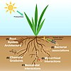

rhizosphere

Definition: The rhizosphere is the narrow region of soil or substrate that is directly influenced by root secretions and associated soil microorganisms known as the root microbiome. Soil pores in the rhizosphere can contain many bacteria and other microorganisms that feed on sloughed-off plant cells, termed rhizodeposition, and the proteins and sugars released by roots, termed root exudates. This symbiosis leads to more complex interactions, influencing plant growth and competition for resources. Much of the nutrient cycling and disease suppression by antibiotics required by plants, occurs immediately adjacent to roots due to root exudates and metabolic products of symbiotic and pathogenic communities of microorganisms. The rhizosphere also provides space to produce allelochemicals to control neighbours and relatives.The rhizoplane refers to the root surface including its associated soil particles which closely interact with each other. The plant-soil feedback loop and other physical factors occurring at the plant-root soil interface are important selective pressures in communities and growth in the rhizosphere and rhizoplane.
Source: Wikipedia
Wikipedia Page
Wikidata Page